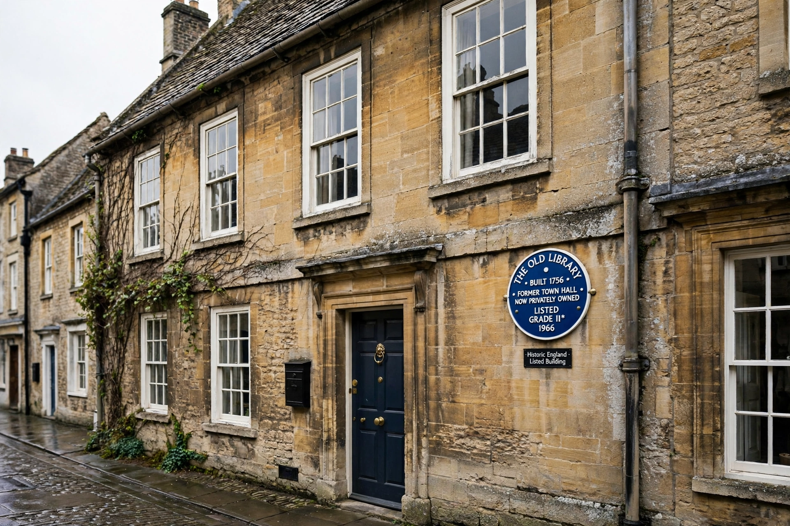

Historic England (officially the Historic Buildings and Monuments Commission for England) is an executive non-departmental public body of the British Government, sponsored by the Department for Culture, Media and Sport. It is tasked with protecting the historic environment of England by preserving and listing historic buildings, scheduling ancient monuments, registering historic parks and gardens, advising central and local government, and helping the public understand and enjoy England's heritage. It maintains the National Heritage List for England.

Historic England protects England's listed buildings and monuments.
| Historic England | |
| Formed | 1 April 2015 (as Historic England); originally 1983 as English Heritage |
|---|---|
| Predecessor | English Heritage |
| Type | Executive non-departmental public body |
| Sponsor | Department for Culture, Media and Sport |
| Headquarters | The Engine House, Swindon |
| Key role | National Heritage List for England; listing and scheduling advice |
The body's origins lie in the Ancient Monuments Protection Act 1882 and the state inspectorate of ancient monuments. In 1983 the Historic Buildings and Monuments Commission was created and traded as English Heritage. On 1 April 2015 English Heritage split: the statutory functions and the name Historic England went to the new public body, while a new charity, the English Heritage Trust, took over the care of the National Heritage Collection of properties such as Stonehenge and Dover Castle under the English Heritage brand.
Historic England maintains the National Heritage List for England, the official register of listed buildings, scheduled monuments, registered parks, gardens and battlefields, and protected wrecks. It advises the Secretary of State on listing decisions, comments on major planning applications, runs research and archive services (including the Historic England Archive in Swindon), and publishes guidance for owners and professionals. It works alongside amenity societies such as the Victorian Society.
Its annual Heritage at Risk Register identifies historic sites threatened by neglect, decay or inappropriate development, and the body runs grant schemes and campaigns - including "Missing Pieces" crowdsourcing for the List and Enrich the List - to protect and document them.